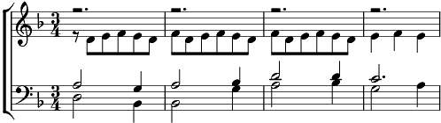

1. [TB] Lou lou lou…
[B] Ses pauvres mains qui sortent comm' des feuilles mort's
De ses manches effrangées, résignées
[TB] Femmes de trente ans cinq ou six enfants
Le petit et les autres braillent La faim, gueule tordue
Elle qui attend comm' un épouvantail
La vieille au coin du feu ses pauvres mains comm' des feuilles mortes
De ses manches effrangées, résignées
Mais non, pleure pas ouh…
2. [TB] Lou lou lou…
[B] La fillette livide L'assiette toujours vide
La vieille aveugle au regard éteint
[TB] Labeur incessant aurore au couchant
La fatigue porte ses chaînes La laide que jamais
Elle sait si bien Qu'elle n'espère plus rien
La vieille au coin du feu…
3. [TB] La la la…
[B] Mais une fill' qui court Vers son nouvel amour
Et mille fleurs dans mille prairies
[TB] La tendresse forte Le temps qui m'emporte
Bienvenue au repas qu'on partage la la la…
Mais un tout premier cri, un enfant qui rit
Un soupir sur tes lèvres endormies
Une fille qui court vers son nouvel amour, la vie !
C'est ça aussi la vie !